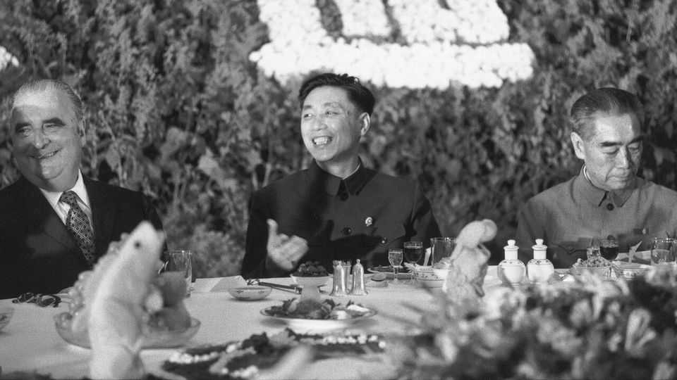

To some, reviled former leaders don’t look so bad
Young netizens mine the Cultural Revolution for tropes

Aug 6th 2026
AMUCH-HERALDED film, “I Know Who You Are”, by one of China’s finest directors, Feng Xiaogang, proved a box-office flop when it was released in June. The film’s portrayal of how a neighbourly relationship in Beijing was distorted by the grim politics of the era of Mao Zedong, including the chairman’s vicious Cultural Revolution, may not have appealed to younger audiences unfamiliar with that turbulent time. Some people may have been put off by the Chinese title, “Zhua Tewu”, which means “Spycatching”, leading them to expect (wrongly) a drama leaden with propaganda.
Getting the film to cinemas did not prove easy for Mr Feng. The launch had been expected in October 2025, but its political content may have prompted censors to subject it to extra checks. At the end of the year an upsurge of online interest in one of Mr Feng’s earlier films, “Youth”, which was a big hit when released in 2017, may have complicated matters. Netizens’ lively discussion of that film, set in part during the Cultural Revolution, touched a nerve among officials.
Certainly, the authorities do not like public hand-wringing about the Cultural Revolution. China’s current leader, Xi Jinping, is particularly bothered by the practice, which he calls “historical nihilism”: just listen to the official silence surrounding this year’s big anniversaries relating to that tumultuous decade, which began in May 1966 and ended with the death of Mao in September 1976.
Mr Feng’s new film actually examines the Cultural Revolution far less punchily than did a popular TV series of the mid-1990s that was based on the same story. But what upset officials about netizens’ discussion of “Youth” was something else. To the limited extent that people are permitted to discuss the period, they must stick to the glib, official line that the Cultural Revolution was a “serious disaster” for which Mao’s wicked widow, Jiang Qing, and other members of the “Gang of Four”, were largely responsible.
Odd and repugnant as it may seem to many older Chinese, let alone hyper-cautious cadres, netizens were recasting one of the four, Wang Hongwen, as a hero. By idolising Wang, they were prodding at the Communist Party in as discomfiting a way as dwelling on the killing of more than 1m people by Mao’s zealots and the persecution of many millions more (in Inner Mongolia, the government still gives small subsidies to disabled survivors of a pogrom by troops and Red Guard mobs in which, by the official count, about 16,000 people died and more than 120,000 were injured).
To young Chinese with little knowledge of the suffering, Wang is an obvious candidate for reinvention as an internet meme. The former security guard at a textile factory was just 37 when plucked from the local leadership of a blue-collar Mao-worshipping faction to become the party’s vice-chairman in Beijing—Mao’s successor-in-waiting, many thought. To netizens, he seemed to be an underdog made good, with film-star looks and brimming with admirable contempt for self-serving party bureaucrats (never mind that he had reputedly high-hogged it in the capital).
Wang, who died in prison in 1992 while serving a life sentence, does not feature in “Youth”. But the actor who plays the protagonist, Huang Xuan, bears a resemblance to him. That was enough for online conspiracy theorists. One, in three videos on Bilibili, an online platform, argued that the film was laced with hidden references to the Cultural Revolution to portray it as a positive movement liberating the masses from the ruling class; the Gang of Four were blamed for atrocities actually committed by an embattled elite.
The film’s screenwriter, Yan Geling, has called this absurd and said that she “hates the Cultural Revolution to death”. But the online videos garnered millions of views, with commenters posting showers of Cultural Revolution-era slogans such as “Long live the people!” and “Persist to the end!” Nor have Wang fans given up. To evade censors they refer to him by nicknames such as “Little Wang” or use Huang Xuan’s name instead. They interweave images of Wang with pictures of the actor and dub footage of Wang with poignant pop music, such as a song about someone wronged.
Wang, then, may have become a symbol to the type of disgruntled young Chinese who vents online about the difficulty of finding work or an affordable house, or who talks about wanting to “lie flat”, a popular codeword for dropping out of the rat race. Apart from Wang’s good looks, it is his rebel, working-class streak the type finds alluring—damn the facts.
In 2016 the Communist Party’s mouthpiece, People’s Daily, marked the 50th anniversary of the start of the Cultural Revolution with a commentary calling it “completely wrong in theory and practice”. This year state media outlets have said nothing. The death in April of Cui Gendi, Wang’s 86-year-old widow, passed unremarked in the press. Officials want to bury an extremely inconvenient part of the party’s history, but young Chinese are mining it for metaphor. ■
Subscribers can sign up to Drum Tower, our new weekly newsletter, to understand what the world makes of China—and what China makes of the world.